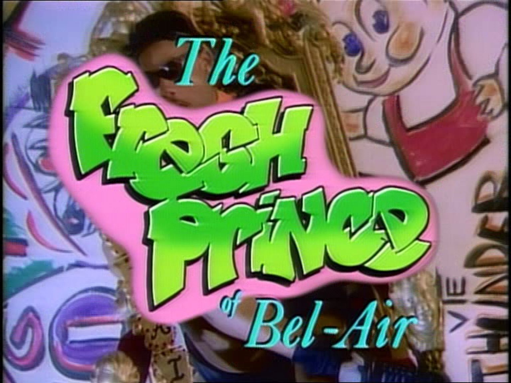

The Fresh Prince of Bel-Air was a 90s African-American sitcom that starred then-20-year-old Will Smith, as a teenager from a tough neighborhood in West Philadelphia, whose mother, who fearing her son’s safety and ability to grow in an underserviced black community, sends him to live with their wealthy relatives, the Banks, in Bel-Air, California. As an African-American male and an American studies major, I selected to study The Fresh Prince of Bel-Air because I’ve witnessed and studied how television mediates social constructions of race and identity. In this essay, I am examining the societal pressures that led to the creation of The Fresh Prince of Bel-Air, and investigate how the show managed to effectively refute a static representation of blackness in media.
